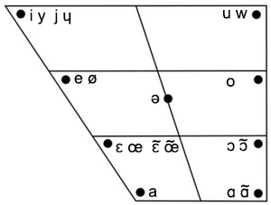

Théorie

Voyelles oral
| | перед.
неокр. | перед.
окр. | центр.
окр. | задн.
окр. |
| закр. | i | y | | u |
| закр.½ | e | ø | ə | o |
| откр.½ | ɛ | œ | | ɔ |
| откр. | a | | | ɑ |
Voyelles nasal
| | перед.
неокр. | перед.
окр. | задн.
окр. |
| закр. | ɛ̃ | œ̃ | ɔ̃ |
| откр. | | | ɑ̃ |
Положение языка
Передние гласные - язык прикасается к нижнем зубам.
Задние гласные - язык оттянут назад от нижниь зубов.
Округление губ
y ø œ o ɔ u
œ̃ ɔ̃
Semi-voyelles
Consonnes
| гб. | гб.-зб. | зб. | ал. | н.-а. | нб. | з.-н. | ув. |
| взрыв. | b p | | d t | | | | g k | |
| фрик. | | v f | | z s | ʒ ʃ | | | |
| боков. | | | | l | | | | ʁ |
| носов. | m | | n | | | ɲ | | |
Удлинение гласных
в ударном закрытом слоге
ø o ɑ
ɛ̃ œ̃ ɔ̃
гласные перед v r z ʒ vr
Слогоделение
сколько гласных, столько слогов
cérémonie -
se-re-mɔ-ni
согласный между гласными - слог перед согласным
camarade -
ka-ma-rad
двa согласных - слог между согласными
marcher -
mar-ʃe
parler -
par-le
две согласных, второй сонорный - слог перед согласными
tablette -
ta-blɛt
acrobate -
a-krɔ-bat
arithmétique -
a-ri-tme-tik
две одинаковых слитных согласных - слог перед согласными
addresser -
a-drɛ-se
две одинаковых раздельных согласных - слог между согласными
illégal -
il-le-gal
il lit -
il-li
три согласных,
s в середине - слог после
s
perspective -
pɛrs-pɛk-ti:-v